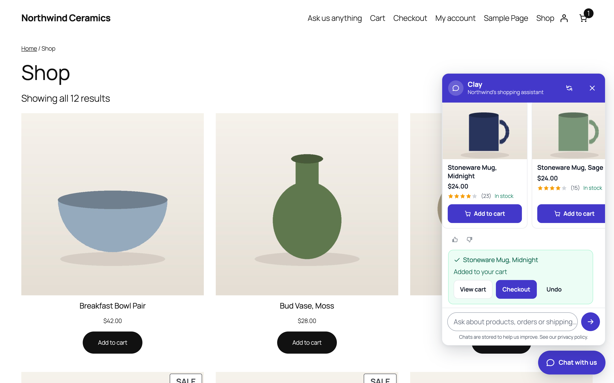
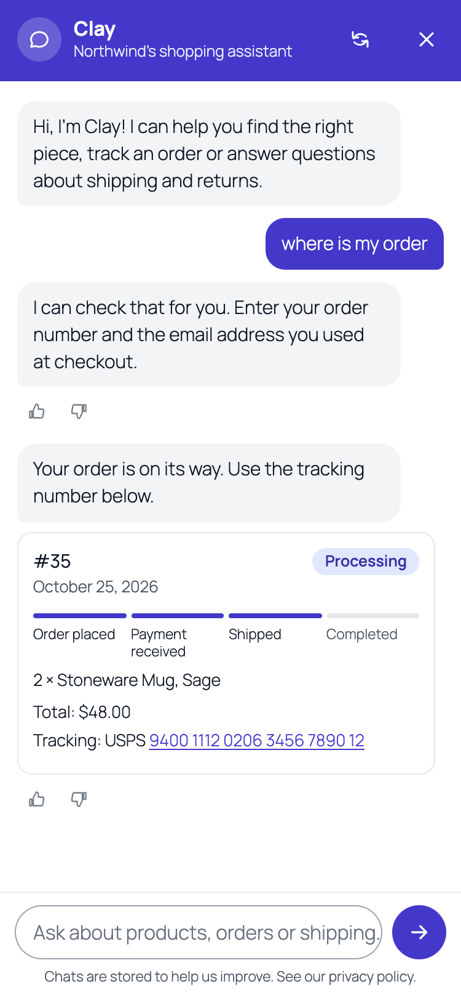
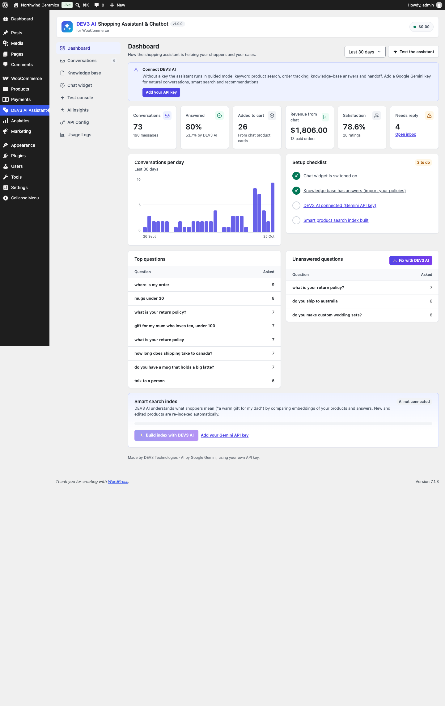
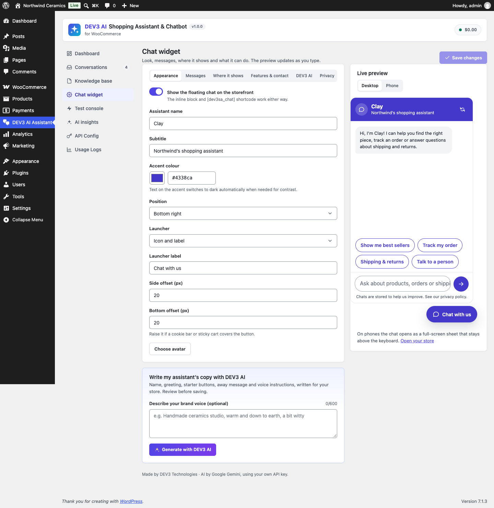
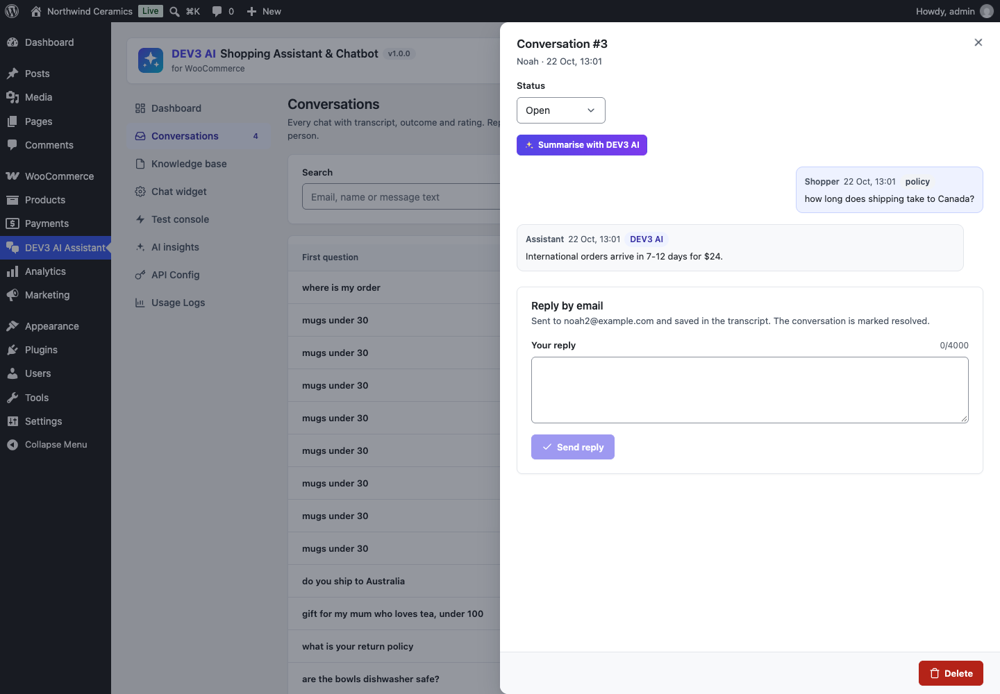
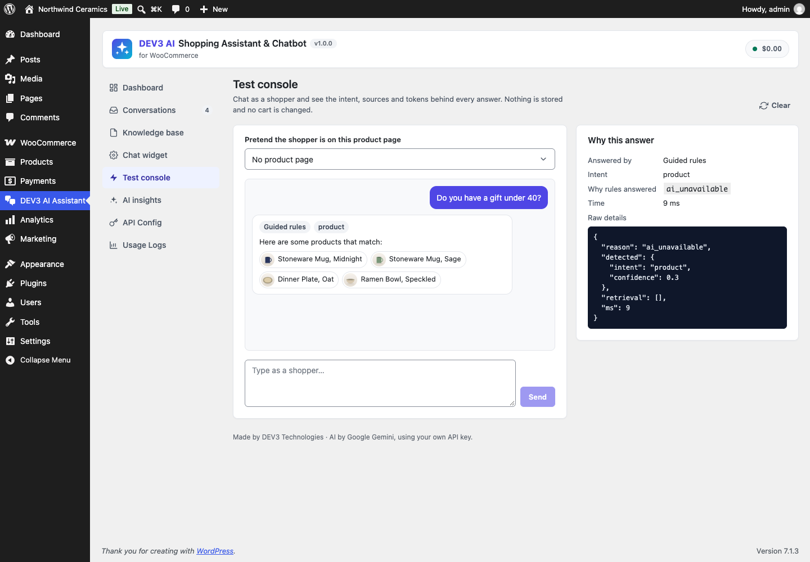

Installation
- Requirements: WordPress 6.0+, PHP 7.4+ (tested on 8.3), WooCommerce 8.0+.
- Plugins › Add New › Upload Plugin, choose
dev3-ai-shopping-assistant-for-woocommerce.zip, install and activate. - Open DEV3 AI Assistant in the admin menu.
No licence key or activation is needed. Updates ship as new zips.
Quick start (5 minutes)
- Knowledge base › Import from store: your refund page, terms, privacy page, shipping zones and payment methods become answers.
- Chat widget: set the name, colour and greeting. The live preview shows the result (desktop or phone).
- Visit your shop: the chat button is in the bottom corner. Try "best sellers", "mugs under 30", "track my order".
- Optional: API Config › add a Google Gemini key, then Knowledge base › Build index with DEV3 AI. The assistant now holds real conversations.
Chat widget
- Appearance: assistant name, subtitle, avatar (media library), accent colour (text colour adapts for contrast), bottom-right or bottom-left, offsets, launcher with icon + label or icon only.
- Messages: greeting, up to 6 starter buttons, message-box placeholder, away message, greeting bubble, auto-open after N seconds (once per visitor).
- Where it shows: every page, shop pages only, or chosen pages; excluded pages; hide on checkout; everyone, guests only or customers only.
- Inline chat: add the Shopping assistant block (height setting) or
[dev3sa_chat height="560"]. - Open from anywhere: the Open chat button block,
[dev3sa_chat_button label="Ask us"], any element withdata-dev3sa-open(optionallydata-dev3sa-message="…"to send a first message), or a link to#dev3sa-chat. Developers can callwindow.dev3saChatApi.open( 'message' ). - Theme-friendly: inherits your font; colours are CSS custom properties (
--dev3sa-accent,--dev3sa-ink,--dev3sa-paper,--dev3sa-tint,--dev3sa-line); styles are scoped so classic themes do not leak in. RTL supported.
On phones
Under 600px the chat opens as a full-screen sheet. It follows the visual viewport, so the message box stays above the on-screen keyboard; it respects notches and the home indicator (safe-area insets); the page behind does not scroll; the phone's back button closes it; buttons are at least 44px; inputs use 16px text so iOS does not zoom. Product cards scroll sideways.
Product finder
Without AI the assistant searches titles, SKUs, descriptions, categories, tags and attribute terms (plurals understood) and ranks products by how well they match. It understands price limits ("under 50", "between 20 and 40", "over 100"), "on sale", "best sellers", "new arrivals", "top rated" and "cheapest". Hidden, private and draft products never appear; out-of-stock products can be hidden. On a product page the shopper can tap Ask about this product.
Add to cart
Simple products get an Add to cart button on their card; variable, grouped and external products link to the product page. After adding, the chat shows View cart, Checkout and Undo, and the theme's mini cart refreshes (classic fragments and the block mini cart). With DEV3 AI, "add two of the blue mugs" adds the product directly (turn off Add to cart when the shopper asks to show the button instead).
Order tracking
Logged-in customers see their recent orders; guests enter the order number and billing email (rate limited, 6 lookups per minute per IP). The card shows status, a timeline, items, total and tracking numbers from Advanced Shipment Tracking (_wc_shipment_tracking_items) or _tracking_number/_tracking_provider/_tracking_url, or any plugin via the dev3sa_order_tracking filter. Addresses, phone numbers and payment details are never shown.
Knowledge base
Entries have a question/title, an answer, a type (FAQ, shipping, returns, payment, policy, product info, other), keywords and a status. In guided mode the best match is quoted; with DEV3 AI the most relevant entries are given to the AI as facts. Import from store is safe to run again (existing titles are skipped).
Talk to a person
"Talk to a person" shows a form (name, email, message). Your team receives an email with the transcript (Reply-To is the shopper), and the conversation is marked Needs reply. Add WhatsApp and phone buttons and business hours with an away message under Chat widget › Features & contact.
Conversations
Search and filter by status and rating, open a transcript (products shown, actions, ratings, source of each answer), change status, reply by email (saved as a team message), summarise with DEV3 AI, delete, or export everything as CSV (spreadsheet formulas are neutralised).
Dashboard & attribution
KPIs for the chosen period: conversations, answered rate and DEV3 AI share, add-to-carts, revenue from chat, satisfaction and conversations needing a reply; a daily chart; top and unanswered questions; a setup checklist. Products added from the chat are remembered in the WooCommerce session; when an order containing them is created (classic or block checkout) it gets _dev3sa_conversation and _dev3sa_assisted_total meta, and the assisted total counts as revenue once the order is paid.
DEV3 AI features
| Feature | Where | What it does |
|---|---|---|
| AI shopping chat | Storefront | Finds candidate products and answers by keyword + semantic search, then DEV3 AI writes a short answer in the shopper's language, picks products (only from the candidates), suggests follow-ups and may add to cart, open order tracking or the handoff form. Prices and stock always come from WooCommerce. |
| Smart search index | Knowledge base / Dashboard | Embeds products and answers (gemini-embedding-001) in a background job; edits are re-indexed automatically. |
| Build my knowledge base | Knowledge base | Drafts FAQ entries from your policies and settings; facts it cannot find are marked [CONFIRM: …]. |
| Knowledge gaps | AI insights | Groups unanswered and low-rated questions and drafts the missing answers. |
| Conversation insights | AI insights | Themes, products shoppers asked for, sentiment and actions (personal data masked). |
| Persona writer | Chat widget | Name, greeting, starters, away message and voice instructions. |
| Conversation summary | Conversations | 1-3 sentence summary with sentiment and follow-up flag. |
| Test console | Test console | Chat as a shopper with debug details (source, intent, model, tokens, knowledge used, timing). |
Admin AI results are drafts: nothing is saved until you click Accept. Storefront AI falls back to guided answers when AI is off, the storefront switch is off, the monthly budget is reached, the per-conversation AI limit is reached, or Gemini fails. First questions from guests are cached for an hour; search embeddings for a day.
Google Gemini API key
- Open Google AI Studio › API keys and create a key.
- Paste it in DEV3 AI Assistant › API Config and click Validate. It is stored encrypted (AES-256-GCM). You can also define
DEV3SA_GEMINI_API_KEYinwp-config.php. - Pick models (defaults gemini-2.5-flash / gemini-2.5-pro), set a monthly budget and decide whether storefront AI is on.
Privacy
- Transcripts are kept for the retention period (default 90 days); with storage off messages are deleted after one day (totals are kept).
- IP addresses are stored only as salted hashes. Optional consent line with a privacy-policy link under the message box.
- GDPR: WordPress' Export/Erase Personal Data tools include chats by email or account.
- With DEV3 AI on, the message, the relevant product facts and knowledge entries go to Google Gemini. Turn on PII masking in API Config to mask emails, phone numbers and card numbers before sending. A privacy-policy snippet is suggested under Settings › Privacy.
Compatibility
WooCommerce HPOS and Cart/Checkout blocks (declared), block themes (Twenty Twenty-Five) and classic themes (Twenty Twenty-One, Astra, GeneratePress, Kadence, Flatsome), page caches (no nonce for guests, no requests until the chat opens), multisite, RTL, PHP 7.4–8.3. Storefront JS is about 20 KB minified (≈7 KB gzipped) and loads in the footer.
Hooks for developers
| Hook | Type | Use |
|---|---|---|
dev3sa_show_widget | filter | Show/hide the floating chat on a request. |
dev3sa_widget_config | filter | Storefront boot data (strings, colours, starters…). |
dev3sa_chat_reply | filter | Every reply before it is stored and sent. |
dev3sa_chat_ai_args | filter | Gemini arguments for the chat (contents, cache…). |
dev3sa_prompt_chat (and _kb_build, _kb_gaps, _insights, _persona, _summary) | filter | Override prompt templates and schemas. |
dev3sa_product_search_results | filter | Keyword search results. |
dev3sa_product_card | filter | Product card sent to the widget. |
dev3sa_semantic_min_score | filter | Minimum cosine score for semantic matches (0.5). |
dev3sa_find_order_id | filter | Map custom order numbers to order ids. |
dev3sa_order_tracking, dev3sa_order_summary | filter | Tracking numbers and the order card. |
dev3sa_store_facts | filter | Facts used by the importer and the knowledge builder. |
dev3sa_public_rate_limit | filter | Requests per minute per IP for each public route. |
dev3sa_handoff_requested | action | After a shopper asks for a person (send to Slack, a helpdesk…). |
dev3sa_knowledge_saved, dev3sa_knowledge_deleted | action | Knowledge entry changes. |
REST API (dev3sa/v1)
Public (same-origin, rate limited): POST public/chat, GET public/history, POST public/cart, POST public/order, POST public/handoff, POST public/rate. Admin (manage_options + nonce): stats, conversations (+ /<id>, /reply, /summary, /export), knowledge (+ /import, /bulk), ai/knowledge, ai/gaps, ai/insights, ai/persona, index, test-chat, plus the shared settings, models, usage and jobs routes.
FAQ
Does it work without an AI key?
Yes, in guided mode. Every feature except the DEV3 AI ones works.
Can the AI invent prices or discounts?
Prices, stock and product links are rendered from WooCommerce, and product ids the AI returns are checked against the products it was given. The system prompt forbids inventing prices, stock, dates or policies.
How do I control cost?
Set a monthly budget in API Config, limit AI answers per conversation and messages per minute in Chat widget › DEV3 AI. Starter buttons like "Track my order" never use AI.
Can I hide the chat on some pages?
Yes: Chat widget › Where it shows, or the dev3sa_show_widget filter.
Where do handoff emails go?
To the address in Chat widget › Features & contact (default: the site admin email).
Changelog
1.0.0 First release.
Screenshots





